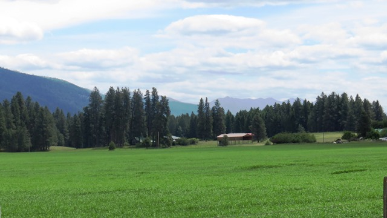
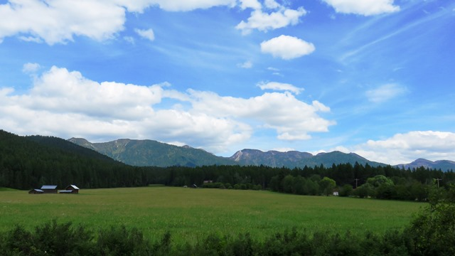
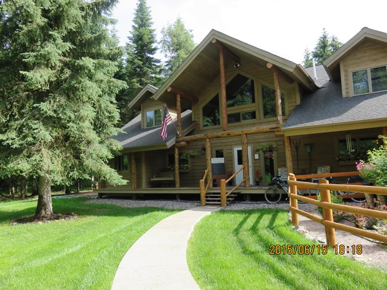
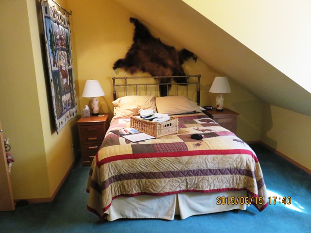

A morning off
After a tough ending to my longest day yet I decided to take the morning off and make a short trip in the afternoon to let my legs recover and get ready for Montana. Walked to the laundry after a late breakfast.

Heading out of town I went back over the bridge crossing the rail yard. A few miles further I drove through the town of Columbia Falls but didn't stop at the falls. The ride had 1 climb in it but generally ran along side the mountains of Glacier NP to the east and the Swan River. Mostly a series of steps east and then south.


Pretty flat and hot.


Lots of farms and mountains all around.

Wrong turn in Ferndale
I added about 4 miles to my day by being in my own little world as I approached Ferndale. I saw the Ferndale fire house and the Ferndale Baptist Church but instead of stopping I continued to follow the guy in front of me until I was two miles out of town. I stopped a passing car and they sent me back.

Stayed at a real nice B&B, The Candlewycke Inn . Only me and 1 other rider (Travis) who left before dawn. A third arrived somewhere in the night but I never saw him.

To go places and do things that I've never done before – that’s what living is all about. See full screen mapText by Jim O'Brien . Photographs by Jim O'BrienTD on Flickr.